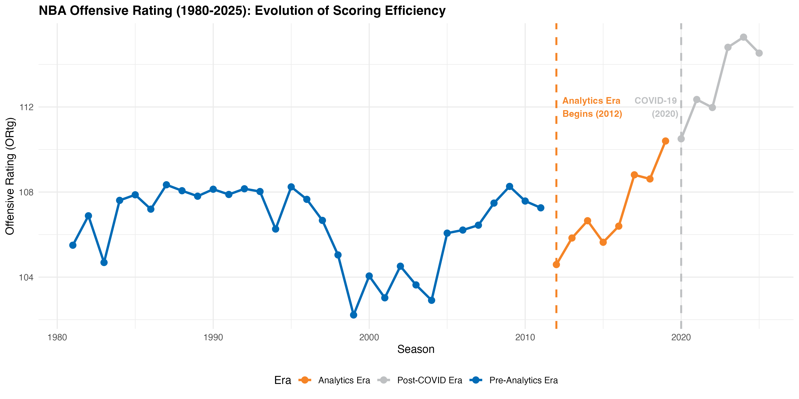
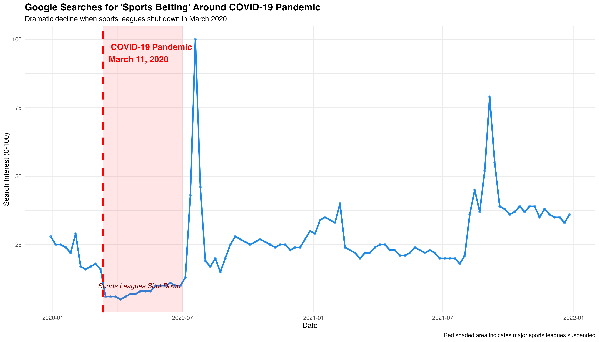
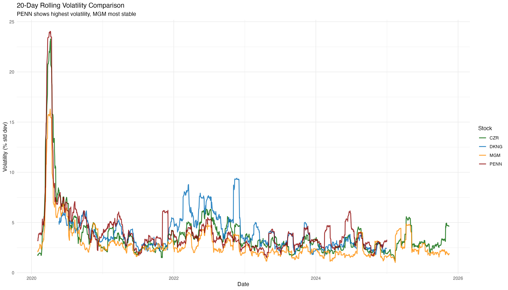

Conclusions: The Analytics Revolution and Its Ripple Effects
What We Discovered
This project set out to answer a straightforward question: How has professional basketball changed over the past 45 years, and what caused those changes? What we found tells a story far bigger than basketball alone. It’s a story about how data transformed decision-making in sports, how external shocks can instantly reshape entire industries, and how the quantification of athletic performance enabled a multi-billion dollar betting industry to emerge. By analyzing nearly half a century of NBA statistics—from offensive efficiency and shot selection to attendance figures and stock prices—we traced three major transformations that reshaped not just how basketball is played, but how millions of people engage with sports.
The Complete Picture: From Evolution to Disruption to Recovery

The diagram above captures the journey this analysis took. We began by examining basketball’s long-run evolution, then zoomed in on the analytics revolution that accelerated around 2012, measured the COVID-19 pandemic’s catastrophic disruption in 2020, and finally connected these on-court changes to the financial markets that grew alongside them. Each piece of this puzzle required different analytical approaches, but together they reveal a coherent narrative about how sports, data, and money intersected in the 21st century.
Basketball’s 45-Year Transformation: Playing Smarter, Not Just Faster
The modern NBA barely resembles the game played in 1980. Back then, teams averaged around 104 points per 100 possessions, relying heavily on mid-range jump shots and post-up plays. By 2025, that figure climbed to nearly 113 points per 100 possessions, a nearly 10% efficiency gain. But this wasn’t simply teams running faster or working harder. The data reveals something more fundamental: teams learned to make smarter decisions about where to shoot.

In the early 1980s, three-point attempts accounted for less than 5% of all shots. Today, that figure exceeds 40%. This wasn’t gradual drift—it was a sharp inflection around 2012 when front offices simultaneously embraced analytics. Our forecasting models show this shift was predictable once the analytics revolution began, following a clear upward trajectory that shows no signs of plateauing. Teams discovered what the math had been saying all along: three-pointers and shots at the rim yield more points than mid-range jumpers. The Houston Rockets didn’t invent this insight, but they popularized it, and the entire league followed. This represents one of the fastest strategic adaptations in professional sports history, all driven by data rather than tradition.
Interestingly, this efficiency revolution occurred despite tempo fluctuations. Pace of play—how many possessions teams get per game—followed a U-shaped pattern: fast in the 1980s, slowing to a trough in the mid-2000s, then accelerating again in the modern era. Our models revealed that efficiency gains came from shot selection, not just speed. A slower team shooting smart shots beats a fast team shooting poor shots. This finding challenges the simplistic narrative that “analytics made basketball faster.” Analytics made basketball efficient, which sometimes meant playing faster, but more importantly meant shooting smarter.
The 2012 Analytics Inflection: When Front Offices Got Serious About Data
Around 2012, something shifted. It wasn’t a single rule change or a star player’s innovation. Instead, it was the year when team executives across the league simultaneously decided to let data guide decisions. Daryl Morey in Houston, Sam Hinkie in Philadelphia, and others began building rosters around statistical principles rather than traditional scouting intuition. Our multivariate models detected this as a structural break—a moment where the relationships between pace, shot selection, and efficiency fundamentally changed.

Before 2012, teams occasionally shot threes, but mostly as a strategic option. After 2012, three-point volume became the foundation of offensive philosophy. The data shows that improving three-point shooting accuracy and increasing three-point volume both independently drove efficiency gains, but their combined effect was transformative. Teams that embraced both—shooting more threes and developing better three-point shooters—pulled ahead of teams that changed only one dimension.
Crucially, this quantification of basketball didn’t happen in isolation. As the game became more measurable and predictable, a parallel industry emerged: sports betting. Daily fantasy platforms like DraftKings and betting operators like Penn Entertainment built businesses on the premise that basketball outcomes could be priced with statistical precision. The analytics revolution didn’t just change how teams played; it created the informational infrastructure for a multi-billion dollar gambling industry. Our analysis of betting stocks shows they experienced explosive growth during the same 2012-2020 period when analytics matured, suggesting these transformations were interconnected rather than coincidental.
COVID-19: The Shock That Tested Everything
Then March 2020 arrived, and everything stopped. The COVID-19 pandemic created an unprecedented natural experiment: what happens when live sports vanish overnight? Our interrupted time series analysis provides concrete answers. NBA attendance—which had hovered around 22 million fans per season for decades—collapsed to essentially zero. Empty arenas and shortened seasons created a 90% drop, the sharpest disruption in sports history.

But the impact extended far beyond basketball courts. Google searches for “sports betting” plummeted by roughly 30-40 points when sports leagues shut down, demonstrating how deeply betting engagement depends on live competition. DraftKings’ stock, which went public via SPAC merger in April 2020, experienced extreme volatility as investors tried to price a betting company without sports to bet on. Penn Entertainment’s stock crashed then rebounded erratically as casinos closed and online betting surged.
The recovery trajectory was uneven. When leagues resumed play in the NBA “bubble” and NFL returned in fall 2020, betting interest rebounded faster than attendance. This makes sense: people could bet on games from home, but couldn’t attend empty arenas. By 2023-2024, attendance had partially recovered but remained below pre-pandemic levels, while betting markets had fully recovered and expanded. The pandemic accelerated a trend already underway—the shift from in-person attendance to digital engagement. COVID didn’t change basketball’s direction; it fast-forwarded the timeline.
Our analysis also examined New York’s January 2022 legalization of online sports betting, the largest market entry in U.S. history. The intervention analysis shows this produced a measurable but complex effect: immediate surge in search interest followed by gradual normalization as the novelty faded. This pattern repeats across state legalizations—initial hype, then stabilization at a higher baseline than before. Sports betting is becoming mainstream entertainment rather than a niche activity, and regulatory changes are the driving force.
What the Forecasts Tell Us: A New Equilibrium or Continued Evolution?
Looking ahead, our forecasting models—ranging from traditional ARIMA to deep learning neural networks—all point toward continued offensive efficiency gains, though with increasing uncertainty. The five-year forecasts project offensive rating will reach 114-115 points per 100 possessions by 2030, with three-point attempt rates potentially exceeding 45% of all shots. But the widening confidence intervals in every model reveal an important truth: we’re in uncharted territory.

Basketball has never been this efficient, shot distributions have never been this extreme, and defenses have never faced these strategic constraints. Will defenses adapt with new schemes that neutralize three-point volume? Will the league intervene with rule changes to rebalance offense and defense? Or will efficiency continue climbing until we approach mathematical limits? Our models can’t answer these questions definitively because they depend on human decisions that haven’t been made yet.
The betting industry’s future appears more certain. Volatility models show that sports betting stocks have stabilized after their pandemic boom-bust cycle. DKNG, PENN, CZR, and MGM all exhibit predictable seasonal patterns tied to the sports calendar, suggesting this young industry is maturing. As more states legalize online betting and operators compete for market share, the business model shifts from explosive growth to sustainable profitability. Our forecasts suggest betting stocks will track broader market trends rather than experiencing the 300% swings seen in 2020-2021.

What This Means for Basketball, Business, and Data Science
This analysis demonstrates three fundamental lessons that extend beyond basketball. First, data-driven optimization works, but takes time to propagate. The math showing three-pointers’ superiority existed in the 1980s, but teams didn’t embrace it until the 2010s. Cultural change lags analytical insight, even when the evidence is overwhelming. Second, external shocks reveal system dependencies. COVID showed how deeply sports betting relies on live competition, how quickly fan engagement can collapse, and how slowly in-person attendance recovers. Understanding these dependencies matters for business planning and risk management. Third, complex systems defy simple models. Our comparison of forecasting methods showed that sophisticated deep learning models didn’t outperform traditional statistical approaches for basketball data. Sometimes simpler tools work better, especially when data is limited and patterns are clear.
For NBA teams, the message is clear: the analytics revolution isn’t over. Efficiency gains continue, and teams that fall behind in player development, shot selection, and strategic adaptation will struggle to compete. For the betting industry, the findings suggest a maturation phase where sustainable business models replace speculative growth. For data scientists, this project illustrates how time series analysis can reveal causal relationships and forecast trajectories in domains far beyond finance and economics.
Basketball in 2025 is a data-optimized sport played before global audiences who engage through betting platforms that didn’t exist 15 years ago. The game evolved, disruption tested it, and it emerged transformed. This story isn’t unique to basketball—it’s playing out across industries where data, strategy, and technology intersect. Understanding how it happened, and what it means for the future, provides a blueprint for analyzing transformation in any complex, evolving system.